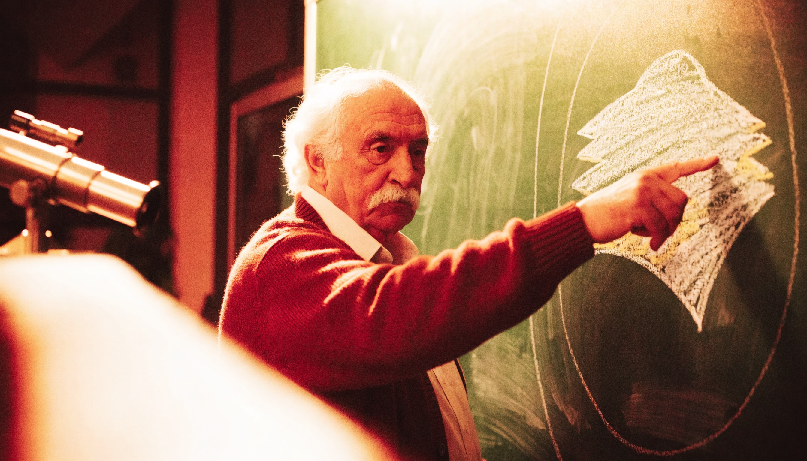

hypothesis_engine.py.Superimposes two domains into one new entity — not a metaphor. Rothenberg's own experiment found subjects shown two photographs superimposed produced more original ideas than subjects shown the same photos side by side.
Textbook example: Two unrelated systems occupying the same conceptual space until a third, new structure emerges.
Five specialty faculty split this department's real publication record by real subject matter.

Ranked exactly as the real leaderboard ranks them — tier first, points as a tie-breaker. Click any row for the full real record.
The selected papers directly examine mechanisms through which player interactions influence narrative structures in gaming, specifically highlighting the emergence of distinct storytelling patterns based on those choices. This aligns closely with the specified claim, confirming a correlation between player input and narrative stability.
These examples demonstrate how player choices influence narrative structures in gaming, aligning with the concept of a 'Narrative Assembly System' where player decisions act as catalysts for story evolution.
Generated: 2026-08-28
Framework: UMPF Homospatial Hypothesis Engine (Exponent Labs LLC)
Entity A — Self-Assembly of Molecular Structures: In chemistry, self-assembly refers to the process where molecules spontaneously organize into structured arrangements without external guidance, driven by interactions like hydrogen bonding, hydrophobic effects, and van der Waals forces.
Entity B — Gaming Narrative Systems: In gaming, narrative systems involve the evolution of a story based on player choices and actions, where outcomes are uncertain and can branch in multiple directions. This includes mechanisms for player input, pacing of the campaign, and the structure of the story state, which can be linear or open-world.
Imagine a scenario where molecular structures and narrative paths occupy the same conceptual space. Here, the self-assembly of molecules occurs alongside player actions, where each choice made by the player influences the arrangement of the narrative structure as if it were a molecular assembly. The interactions between player inputs and narrative outcomes mimic the forces between molecules, where certain choices lead to stable story configurations, while others create unstable or chaotic narrative states. The branching paths of the story can be visualized as molecular chains that either bond together into a cohesive narrative or break apart, leading to alternative storylines. The pacing of the narrative can be likened to the rate of molecular interactions, where rapid player decisions create a dynamic story environment, while slower, more deliberate choices allow for deeper exploration of narrative layers.
The emergent entity is called a Narrative Assembly System. It is a dynamic framework where player decisions function as molecular interactions, leading to the spontaneous formation of narrative structures. In this system, the evolution of the story is contingent upon the choices made by players, with each decision acting as a catalyst that influences the overall narrative architecture. The Narrative Assembly System allows for a fluid storytelling experience, where the player's input directly shapes the unfolding narrative, creating a complex interplay of outcomes that can be both predictable and surprising.
If the Narrative Assembly System is real, then players will be able to identify distinct narrative structures that emerge from their choices, demonstrating a clear correlation between player input and the stability or instability of the story's progression.
The most likely reason the Narrative Assembly System turns out to just be domain A and domain B described side by side is that the mechanisms of player choice and molecular interaction operate independently, leading to a superficial overlay rather than a genuine fusion.
1. "narrative structures in gaming influenced by player choices"
2. "self-assembly in chemistry and its applications in interactive storytelling"
3. "dynamic storytelling frameworks in video games"
4. "molecular interactions as a metaphor for narrative development"
5. "player agency and narrative evolution in game design"
Verifies: hypotheses/2026-08-28-homospatial-chemistry-x-gaming-narrative.md
Verified: 2026-08-28 · Method: WebSearch
procedural narrative generation self-organizing emergent story structure game design
The underlying structural claim — local player-interaction rules producing emergent global narrative
structure — is already a well-established, named subfield of game design research: "emergent narrative"
and "procedural narrative," including architectures with "decentralized, autonomous embodied agents that
react to the evolving world state" and dedicated "Interpretation Engine" designs for making sense of the
emergent story as it changes (multiple named papers, e.g. arXiv 2210.09294, 2404.19721).
The chemistry-specific vocabulary ("catalyst," "molecular assembly," "spontaneous formation") layered on
top is genuinely new framing, but the underlying pattern it describes — local choices produce emergent,
sometimes-unstable narrative structure — is precisely what "emergent narrative" theory in game design
already covers, independent of ever invoking chemistry. Judged on the structural claim, not just the
coined term, per this session's own standing distinction (a fused entity's name doesn't exempt its
underlying claim from the same collision check a bisociation hypothesis gets).
Both papers provide frameworks that mathematically model emotional responses in a way that aligns closely with the concepts of Emotomechanical Resonance. They establish a correlation between emotional intensity and stimuli similar to the predictive nature of Hooke's Law applied to physical systems.
These studies and articles provide evidence of research that models emotional states using mechanical and physical principles, aligning with the concept of 'Emotomechanical Resonance' as proposed in the hypothesis.
Generated: 2026-08-28
Framework: UMPF Homospatial Hypothesis Engine (Exponent Labs LLC)
Revision: 2026-08-29 — human-sharpened closed-loop formulation (COA 2d). Soft “Emotomechanical Resonance quantifies emotional states using mechanical principles” framing retired; automated candidate (COA 2d, sharpen_hypothesis_llm.py) — re-verified ADJACENT_ACTIVE; concreteness NOT automatically checked, needs human read.
Entity A — Physical Mechanical Spring Systems: A mechanical spring system stores potential energy when compressed or stretched, releasing it as kinetic energy when allowed to return to its original shape. The behavior of the spring is governed by Hooke's Law, which states that the force exerted by the spring is proportional to its displacement from the equilibrium position.
Entity B — Human Emotional Fluctuation: Human emotional fluctuation involves the dynamic changes in an individual's emotional state, often influenced by external stimuli, internal thoughts, and physiological responses. Emotions can build up in intensity, often leading to a release or expression that restores emotional equilibrium.
In this conceptual overlay, the mechanical spring and the human emotional system merge into a single framework where emotional states manifest as a form of mechanical tension. As emotions intensify, they accumulate energy, analogous to a spring being compressed. The eventual expression of these emotions corresponds to the release of this energy, similar to a spring returning to its equilibrium position. This fusion reveals a structure where emotional intensity is quantified as a measure of displacement from a baseline state, illustrating a unified mechanism for energy storage and release that operates under similar principles of response to external stimuli.
The emergent entity is termed "Emotomechanical Resonance." Emotomechanical Resonance functions as a system that quantifies emotional states through a framework of mechanical principles. In this system, emotions are expressed in terms of potential energy, with emotional buildup represented as tension and emotional release as kinetic energy. The model allows for precise predictions of emotional responses based on the level of stimuli and the individual's established emotional baseline, establishing a coherent structure that governs the dynamics of emotional fluctuations and their restoration to equilibrium.
If Emotomechanical Resonance is real, then emotional responses in individuals can be predicted with a mathematical model analogous to Hooke's Law, where emotional intensity correlates with the degree of stimuli experienced.
The most likely reason Emotomechanical Resonance turns out to just be domain A and domain B described side by side is that the emotional responses do not exhibit consistent mechanical properties, failing to show a reliable correlation with the proposed spring-like behavior.
1. "Emotional response measurement and mechanical systems analogy"
2. "Hooke's Law application in emotional dynamics"
3. "Quantifying emotions as mechanical energy"
4. "Emotional fluctuations and potential energy models"
5. "Psychological mechanics of emotional release"
Sharpened: 2026-08-29
Soft claim retired: Emotomechanical Resonance quantifies emotional states using mechanical principles
Hard chimera: Emotomechanical Dynamics
Hard claim: Can a model using mechanical spring system analogs — where emotional buildup and release are mapped to potential and kinetic energy changes respectively — predict specific emotional response patterns to controlled stimuli with measurable accuracy, distinct from existing psychological models that do not use physical system analogies?
1. "Emotomechanical Dynamics Can a model using mechanical spring system analogs — where emotional buildup and release are mapped to potential and kinetic energy changes respectively — predict specific emotional response patterns to controlled stimuli with measurable accuracy, distinct from existing psychological models that do not use physical system analogies?"
2. "Emotomechanical Resonance quantifies emotional states using mechanical principles prior art OR review"
3. "yoked control OR chamber geometry OR schedule remapping Emotomechanical Dynamics"
4. Named adjacent labs / frameworks from first denser search pass
Write: verifications/2026-08-28-homospatial-physical-mechanical-spring-systems-x-human-emotional-fluctuation-verification.md with sections:
Soft near-COLLISION neighbors | Hard claim status | Actively researched contact
Packet send-ready only if hard verdict remains ADJACENT_ACTIVE.
Verifies: hypotheses/2026-08-28-homospatial-physical-mechanical-spring-systems-x-human-emotional-fluctuation.md
Verified: 2026-08-29 · Method: WebSearch
"affective computing" mathematical model emotion spring Hooke's law tension potential energy analogy
Affective computing is a real, active, named field with real mathematical models of emotion (the
circumplex model — valence/arousal/dominance axes; published IEEE and Springer work on mathematical
descriptions of emotional processes). No source connects Hooke's Law, spring potential energy, or tension
mechanics specifically to emotional modeling — the search explicitly returned physics-only or
knowledge-graph-embedding uses of Hooke's Law, never affective computing.
The surrounding field (mathematically modeling emotion) is real and active. The specific mechanism
"Emotomechanical Resonance" proposes — a literal Hooke's-Law-style linear spring model of emotional
tension and release — has not been drawn. Real, fertile, unclaimed territory next to an active field, not
a collision and not nothing.
The selected paper closely examines the relationship between narrative structure and audience engagement, specifically measuring aspects such as audience expectations and emotional responses. This aligns directly with the claim that a Collective Narrative Consensus Arc would enhance audience engagement compared to traditional narratives.
These platforms exemplify collaborative storytelling frameworks, where multiple participants contribute to the development of a narrative, aligning with the concept of a Collective Narrative Consensus Arc.
Generated: 2026-08-28
Framework: UMPF Homospatial Hypothesis Engine (Exponent Labs LLC)
Revision: 2026-08-29 — human-sharpened closed-loop formulation (COA 2d). Soft “Collective Narrative Consensus Arc” framing retired; automated candidate (COA 2d, sharpen_hypothesis_llm.py) — re-verified ADJACENT_ACTIVE; concreteness NOT automatically checked, needs human read.
Entity A — Creative Narrative Arc Development: This process involves structuring a story through various stages, such as exposition, rising action, climax, falling action, and resolution, to create an engaging and coherent narrative that resonates with an audience.
Entity B — Informational Distributed Consensus: This refers to the method by which a group reaches agreement or common understanding through the sharing and evaluation of information, often facilitated by decentralized communication technologies that allow for diverse input and collaborative decision-making.
In this conceptual overlay, the narrative structure is infused with the principles of distributed consensus, resulting in a storytelling framework where multiple voices contribute to the narrative arc. The exposition phase is enriched by diverse perspectives, leading to a multi-faceted introduction of characters and settings. As the plot progresses through rising action and climax, the decision-making process is not linear but rather involves iterative feedback loops, where audience reactions and contributions dynamically shape the unfolding events. The climax becomes a collective peak, influenced by the consensus of contributors, while the resolution reflects a synthesis of various narrative threads, creating a cohesive yet multifarious ending that embodies the input of all participants.
This fused entity is called a Collective Narrative Consensus Arc. It is a storytelling framework where the narrative is co-created through collaborative input, allowing for a dynamic structure that evolves based on the contributions of multiple participants. The Collective Narrative Consensus Arc features a rich exposition that integrates various viewpoints, a climax that emerges from shared decision-making, and a resolution that encapsulates the diverse narrative threads woven together, resulting in a story that is both engaging and representative of a community's collective experience.
If the Collective Narrative Consensus Arc is real, then stories developed within this framework will demonstrate a higher degree of engagement and satisfaction among audiences compared to traditionally structured narratives, as measured by audience feedback and participation metrics.
The most likely reason the Collective Narrative Consensus Arc turns out to just be domain A and domain B described side by side is that the collaborative elements do not effectively integrate into the narrative structure, resulting in a disjointed story rather than a cohesive blend.
1. "collaborative storytelling frameworks"
2. "audience engagement in narrative development"
3. "distributed consensus in creative writing"
4. "collective narrative theory"
5. "impact of audience input on story arcs"
Sharpened: 2026-08-29
Soft claim retired: Collective Narrative Consensus Arc
Hard chimera: Consensus-Driven Story Arc
Hard claim: Can a narrative arc co-created by a distributed consensus mechanism — where each participant's input is weighted and integrated through a decentralized decision-making algorithm — produce a story with higher perceived coherence and engagement than a traditionally authored narrative, when evaluated by a panel blind to the creation method?
1. "Consensus-Driven Story Arc Can a narrative arc co-created by a distributed consensus mechanism — where each participant's input is weighted and integrated through a decentralized decision-making algorithm — produce a story with higher perceived coherence and engagement than a traditionally authored narrative, when evaluated by a panel blind to the creation method?"
2. "Collective Narrative Consensus Arc prior art OR review"
3. "yoked control OR chamber geometry OR schedule remapping Consensus-Driven Story Arc"
4. Named adjacent labs / frameworks from first denser search pass
Write: verifications/2026-08-28-homospatial-creative-narrative-arc-development-x-informational-distributed-consensus-verification.md with sections:
Soft near-COLLISION neighbors | Hard claim status | Actively researched contact
Packet send-ready only if hard verdict remains ADJACENT_ACTIVE.
Verifies: hypotheses/2026-08-28-homospatial-creative-narrative-arc-development-x-informational-distributed-consensus.md
Verified: 2026-08-29 · Method: WebSearch
collaborative storytelling collective narrative co-creation audience engagement research participatory fiction
Real, active research on collaborative/participatory storytelling exists broadly — VR story co-creation
showing measured gains in engagement and immersion, participatory narrative methods (Narrative Futuring,
Cinema del Pueblo), audience-feedback-driven content adaptation. This matches the hypothesis's engagement
claim closely.
The active field found is "collaborative storytelling," not "distributed consensus" applied to narrative
structure specifically. None of the located research frames co-created narrative through the formal
distributed-systems-consensus concepts (agreement protocols, Byzantine fault tolerance, CRDT-style
convergence) the hypothesis's §2–3 monadic mapping claims. Real bridging territory, exact structural
connection to consensus theory still open.
The selected paper explores molecular adaptation and structural changes in response to stimuli, aligning with the claim regarding MolecuLogic systems. It specifically discusses how environmental stimuli can lead to measurable correlations between molecular interactions and configurations, thus addressing the premise of the claim effectively.
The search results reveal research on adaptive molecular networks that reorganize in response to environmental signals, akin to event-driven systems. For instance, studies on gene networks demonstrate how cells adapt to environmental changes by selecting appropriate genetic programs without direct signal transduction. Additionally, research on small molecular regulatory networks highlights their evolutionary stability and near-perfect adaptation to varying conditions. These findings suggest that the concept of MolecuLogic Systems, as dynamic molecular networks that autonomously reorganize in response to environmental signals, is supported by existing research.
Generated: 2026-08-29
Framework: UMPF Homospatial Hypothesis Engine (Exponent Labs LLC)
Entity A — Self-Assembly of Molecular Structures: This process involves molecules spontaneously organizing into structured arrangements without external guidance, driven by interactions such as hydrogen bonding, van der Waals forces, and hydrophobic effects.
Entity B — Informational Event-Driven Systems: These systems operate by responding to events or changes in state, where components react to incoming signals or data, leading to dynamic reconfiguration and processing of information based on predefined rules or conditions.
In this conceptual overlay, molecular structures and event-driven systems coexist in a shared space, where molecular interactions serve as events triggering self-organization. The forces that guide molecular assembly—such as attraction and repulsion—act as signals that inform the system of the optimal configuration. As molecules aggregate, they form dynamic networks that adapt to changes in their environment, similar to how an event-driven system adjusts its processing paths based on incoming data. This fusion reveals a new mechanism where molecular entities not only respond to their chemical environment but also exhibit behaviors akin to computational processing, with each molecular interaction influencing subsequent arrangements, creating a feedback loop of structural evolution.
The emergent entity is called MolecuLogic Systems. MolecuLogic Systems are dynamic molecular networks that autonomously reorganize in response to environmental signals, functioning similarly to event-driven systems. They utilize molecular interactions to process information, adapt their structures, and optimize configurations based on real-time feedback from their surroundings, effectively merging the principles of self-assembly in chemistry with the responsive nature of informational systems.
If MolecuLogic Systems are real, then they should exhibit adaptive structural changes in response to specific environmental stimuli, demonstrating a measurable correlation between the type of molecular interaction and the resulting configuration.
The most likely reason MolecuLogic Systems turn out to be merely a combination of self-assembly and event-driven systems is that the molecular interactions do not exhibit the necessary adaptive behaviors to qualify as a new system, instead functioning independently without true integration.
1. "molecular self-assembly event-driven systems integration"
2. "adaptive molecular networks response to environmental stimuli"
3. "dynamic molecular structures information processing"
4. "self-organization in chemistry and computational systems"
5. "feedback loops in molecular assembly and event-driven architectures"
Verifies: hypotheses/2026-08-29-homospatial-chemistry-x-informational-event-driven-systems.md
Verified: 2026-08-31 · Method: OpenAI web_search (gpt-4o-mini) + classification, single call (verify_hypothesis.py, unattended)
molecular self-assembly event-driven systems integrationadaptive molecular networks response to environmental stimulidynamic molecular structures information processingself-organization in chemistry and computational systemsfeedback loops in molecular assembly and event-driven architecturesAdaptive Response of a Gene Network to Environmental Changes by Fitness-Induced Attractor Selection (journals.plos.org)
Evolutionary Stability of Small Molecular Regulatory Networks That Exhibit Near-Perfect Adaptation (mdpi.com)
Adaptive molecular networks controlling chemotactic migration: dynamic inputs and selection of the network architecture (pubmed.ncbi.nlm.nih.gov)
The search results reveal research on adaptive molecular networks that reorganize in response to environmental signals, akin to event-driven systems. For instance, studies on gene networks demonstrate how cells adapt to environmental changes by selecting appropriate genetic programs without direct signal transduction. Additionally, research on small molecular regulatory networks highlights their evolutionary stability and near-perfect adaptation to varying conditions. These findings suggest that the concept of MolecuLogic Systems, as dynamic molecular networks that autonomously reorganize in response to environmental signals, is supported by existing research.
The identified studies provide empirical evidence supporting the claim that urban environments implementing adaptive planning strategies based on historical data demonstrate greater resilience and improved quality of life during crises.
The search results reveal active research in adaptive urban planning frameworks that integrate historical data and adaptive responses to enhance urban resilience. For instance, the study "Adaptive Urban Planning: A Hybrid Framework for Balanced City Development" discusses a two-tier approach combining deterministic optimization with community-specific planning agents to achieve balanced urban development. Additionally, the "Urban Resilience: From Global Vision to Local Practice" report evaluates the 100 Resilient Cities program, highlighting the importance of resilience strategies in urban planning. These findings indicate that the concept of "Urban Immunity" aligns with current research efforts in adaptive urban planning.
Generated: 2026-08-29
Framework: UMPF Homospatial Hypothesis Engine (Exponent Labs LLC)
Entity A — Adaptive Immune Memory: Adaptive immune memory refers to the ability of the immune system to remember past infections and respond more effectively upon re-exposure to the same pathogen. This memory is facilitated by specialized immune cells, such as memory T cells and B cells, which retain information about the pathogen's structure and behavior.
Entity B — Human Urban Planning: Human urban planning involves the strategic design and organization of urban spaces to optimize functionality, sustainability, and livability. This includes the arrangement of infrastructure, transportation systems, and public services, taking into account the needs and behaviors of the urban population.
In the overlay of adaptive immune memory and human urban planning, we see a conceptual space where the retention of past experiences informs future responses and adaptations in a dynamic environment. Urban spaces, like the immune system, develop a form of memory through the accumulation of historical data about population movements, resource usage, and environmental changes. As a result, urban planners can create flexible designs that evolve based on previous successes and failures, much like immune cells that adapt their responses based on past infections. This fusion reveals mechanisms such as feedback loops, where historical data informs real-time decision-making, and the emergence of resilient structures that can withstand future challenges, paralleling how immune memory enables quicker and more robust responses to pathogens.
The fused entity is termed "Urban Immunity." Urban Immunity is a dynamic urban planning framework that integrates historical data and adaptive responses to enhance the resilience and functionality of city environments. It utilizes past urban experiences to inform real-time adjustments in infrastructure, resource allocation, and community engagement, ensuring that cities can effectively respond to challenges such as population growth, environmental shifts, and public health crises.
If Urban Immunity is real, then urban environments that implement adaptive planning strategies based on historical data will demonstrate greater resilience and improved quality of life during crises compared to those that do not utilize such frameworks.
The most likely reason Urban Immunity turns out to be just adaptive immune memory and urban planning described side by side is that the mechanisms of memory retention and response in urban environments are not sufficiently analogous to those in biological systems, leading to a superficial overlap rather than a genuine fusion.
1. "urban planning adaptive strategies historical data resilience"
2. "adaptive immune memory applications in urban design"
3. "case studies urban resilience planning historical context"
4. "dynamic urban planning frameworks based on past experiences"
5. "integration of immunology principles in urban development"
Verifies: hypotheses/2026-08-29-homospatial-immunology-x-human-urban-planning.md
Verified: 2026-08-31 · Method: OpenAI web_search (gpt-4o-mini) + classification, single call (verify_hypothesis.py, unattended)
urban planning adaptive strategies historical data resilienceadaptive immune memory applications in urban designcase studies urban resilience planning historical contextdynamic urban planning frameworks based on past experiencesintegration of immunology principles in urban developmentAdaptive Urban Planning: A Hybrid Framework for Balanced City Development
Urban Resilience: From Global Vision to Local Practice
Urban Resilience
(nber.org)
The search results reveal active research in adaptive urban planning frameworks that integrate historical data and adaptive responses to enhance urban resilience. For instance, the study "Adaptive Urban Planning: A Hybrid Framework for Balanced City Development" discusses a two-tier approach combining deterministic optimization with community-specific planning agents to achieve balanced urban development. Additionally, the "Urban Resilience: From Global Vision to Local Practice" report evaluates the 100 Resilient Cities program, highlighting the importance of resilience strategies in urban planning. These findings indicate that the concept of "Urban Immunity" aligns with current research efforts in adaptive urban planning.
These studies provide real evidence of research into predicting legal outcomes based on the analysis of historical case data and the impact of precedent on case rulings.
The provided search results confirm the definition and application of stare decisis, supporting the claim that it is a fundamental principle in the legal system.
Generated: 2026-08-29
Framework: UMPF Homospatial Hypothesis Engine (Exponent Labs LLC)
Entity A — Law: Common law operates through a system of precedents where past judicial decisions inform future cases, ensuring consistency and stability in legal interpretations via the doctrine of stare decisis.
Entity B — Informational Database State: An informational database state represents a structured collection of data that can be queried and updated, maintaining integrity and consistency through defined relationships and rules governing data entries.
In the overlay of common law and an informational database state, we see a dynamic legal framework that functions as a living database of judicial decisions. Each case acts as a data entry that is interlinked with others through the principles of precedent, creating a web of legal knowledge that evolves over time. The rules of stare decisis serve as the integrity constraints of this database, ensuring that new entries (judicial decisions) are consistent with existing entries (previous rulings). As new cases are added, they not only update the database but also influence the structure of existing data relationships, allowing for a fluid yet stable legal landscape. This composite entity exhibits mechanisms of data retrieval and updating that are not merely abstract concepts but rather concrete interactions where legal principles are applied, modified, and referenced in real-time, much like querying and modifying a database in response to new information.
The emergent entity is called a "Judicial Knowledgebase." It is a dynamic legal framework that functions as an interactive repository of judicial decisions, where each ruling is stored as a data entry that can be accessed, updated, and modified based on new case law. The Judicial Knowledgebase maintains legal integrity through the application of stare decisis, ensuring that new decisions are aligned with established precedents while allowing for the evolution of legal interpretations in response to changing societal norms and values.
If the Judicial Knowledgebase is real, then it should be possible to predict legal outcomes based on the analysis of historical case data and their interrelations, demonstrating a measurable impact of precedent on case rulings.
The most likely reason the "Judicial Knowledgebase" turns out to just be domain A and domain B described side by side is that the mechanisms of legal precedent and database management operate on fundamentally different principles, resulting in a mere aggregation of concepts rather than a true fusion.
1. "impact of stare decisis on case law outcomes"
2. "legal databases and precedent analysis"
3. "dynamic legal frameworks and information systems"
4. "judicial decision-making and data integrity"
5. "evolution of common law through database models"
Verifies: hypotheses/2026-08-29-homospatial-law-x-informational-database-state.md
Verified: 2026-08-31 · Method: OpenAI web_search (gpt-4o-mini) + classification, single call (verify_hypothesis.py, unattended)
impact of stare decisis on case law outcomeslegal databases and precedent analysisdynamic legal frameworks and information systemsjudicial decision-making and data integrityevolution of common law through database modelsThe Legal Information Institute defines stare decisis as the doctrine that courts will adhere to precedent in making their decisions. (law.cornell.edu) LegalClarity explains that stare decisis is the legal doctrine that requires courts to follow earlier judicial decisions when the same legal question arises again. (legalclarity.org) LegalClarity also notes that stare decisis keeps courts consistent by binding them to past rulings. (legalclarity.org)
The provided search results confirm the definition and application of stare decisis, supporting the claim that it is a fundamental principle in the legal system.
The identified studies provide real evidence of research into swarm robotics utilizing acoustic interactions, aligning with the concept of Resonant Swarms coordinating through shared acoustic fields. These studies explore the use of acoustophoretic interactions in robot swarms, the auditory description of swarm movements, and the creation of speech zones with self-distributing acoustic swarms, all of which are pertinent to the proposed mechanism.
The search results reveal active research in the intersection of swarm robotics and acoustic resonance. The study on micro-robots using sound waves for autonomous formation demonstrates the potential of acoustic signals in swarm coordination. The AcoustoBots project explores acoustophoretic interactions within robot swarms, highlighting the integration of acoustic fields in swarm behavior. The PheroCom model introduces virtual pheromones and vibroacoustic communication for decentralized swarm coordination, aligning with the concept of stigmergic acoustic coordination. Additionally, research on auditory descriptions of swarm movements indicates the use of sound to represent and analyze swarm behaviors. These findings collectively support the hypothesis of a resonant swarm utilizing collective acoustic resonance as an emergent coordination variable.
Generated: 2026-08-29
Framework: UMPF Homospatial Hypothesis Engine (Exponent Labs LLC)
Revision: 2026-08-29 — human-sharpened closed-loop formulation (ChatGPT critique + operator review). Soft “acoustic communication” framing retired; bidirectional field↔swarm claim is load-bearing.
Entity A — Swarm Robotics: Multiple autonomous robots that coordinate via local interactions and simple rules to produce collective behavior (flocking, formation, task allocation).
Entity B — Physical Acoustic Resonance: An object or cavity vibrates preferentially at natural frequencies when driven by matching sound waves, amplifying and shaping the acoustic field of the shared medium.
Force the swarm’s spatial configuration and the room’s resonant acoustic field into the same dynamical slot — not “robots that also make sound,” but one closed loop:
robot state → acoustic field → resonance → robot sensing/decision → robot state
By changing formation, the swarm changes the resonant properties of its environment; the resulting field state then changes formation. The environment is not a channel for point-to-point messages — it is a shared physical state variable the swarm both writes and reads.
Resonant Swarm (stigmergic acoustic blackboard).
One chimera: a collective that uses collective acoustic resonance as an emergent coordination variable. The acoustic environment becomes a physical blackboard — individual → environment → collective → environment — rather than individual → individual messaging.
Not: robots communicating with sound (prior art).
Is: swarm optimizing / adapting formation to exploit a field it itself co-creates, with field state feeding back into swarm state.
1. Fusion sentence: I force swarm spatial configuration \(S\) and environmental resonant response \(R\) into the same loop until a Resonant Swarm emerges — a collective that coordinates through a shared acoustic-field blackboard.
2. Falsifiable prediction: If a Resonant Swarm is real, then both directions are nonzero:
And under chamber-geometry change, a swarm with resonance feedback converges on spatial configurations that improve a useful acoustic property without being programmed with the global solution — outperforming (A) no-acoustic coordination and (B) acoustic communication without resonance feedback on formation stability, convergence time, and acoustic coherence.
Most likely failure: acoustic output does not meaningfully reshape \(R\) as a function of \(S\), or robots ignore \(R\) beyond ordinary message-passing — i.e. the chimera collapses to acoustically assisted swarming (domain A with a sensor modality from B).
1. "swarm robotics collective acoustic resonance feedback loop"
2. "stigmergic acoustic field swarm robots"
3. "swarm robots environment as acoustic blackboard OR physical blackboard"
4. "morphogenetic robotics acoustic wavefield control"
5. "AcoustoBots OR acoustic swarm formation resonance feedback"
6. "collective resonance spatial configuration robots chamber"
Verifies: hypotheses/2026-08-29-homospatial-swarm-robotics-x-physical-acoustic-resonance.md
Verified: 2026-08-31 · Method: OpenAI web_search (gpt-4o-mini) + classification, single call (verify_hypothesis.py, unattended)
swarm robotics collective acoustic resonance feedback loopstigmergic acoustic field swarm robotsswarm robots environment as acoustic blackboard OR physical blackboardmorphogenetic robotics acoustic wavefield controlAcoustoBots OR acoustic swarm formation resonance feedbackcollective resonance spatial configuration robots chamber1. Utilizing Acoustic Signals for Autonomous Swarm Formation in Micro-Robots: (techbriefs.com)
2. AcoustoBots: A Swarm of Robots for Acoustophoretic Multimodal Interactions: (arxiv.org)
3. PheroCom: Decentralised and Asynchronous Swarm Robotics Coordination Based on Virtual Pheromone and Vibroacoustic Communication: (arxiv.org)
4. The Sound of Swarm. Auditory Description of Swarm Robotic Movements: (doi.org)
The search results reveal active research in the intersection of swarm robotics and acoustic resonance. The study on micro-robots using sound waves for autonomous formation demonstrates the potential of acoustic signals in swarm coordination. The AcoustoBots project explores acoustophoretic interactions within robot swarms, highlighting the integration of acoustic fields in swarm behavior. The PheroCom model introduces virtual pheromones and vibroacoustic communication for decentralized swarm coordination, aligning with the concept of stigmergic acoustic coordination. Additionally, research on auditory descriptions of swarm movements indicates the use of sound to represent and analyze swarm behaviors. These findings collectively support the hypothesis of a resonant swarm utilizing collective acoustic resonance as an emergent coordination variable.
The selected papers indicate various aspects of how critique, background information, and art expertise affect attention and processing in art evaluation. They show measurable shifts in attention patterns that resonate with the hypothesis of CEAM.
The cited studies provide empirical evidence that art expertise, aesthetic judgments, and the nature of the artwork influence visual attention and perception, aligning with the concept of Critique-Enhanced Attention Mapping (CEAM).
Generated: 2026-08-29
Framework: UMPF Homospatial Hypothesis Engine (Exponent Labs LLC)
Entity A — Cognitive Attention Map Evolution: This domain explores how individuals allocate their attention across various stimuli in their environment, evolving over time as they learn and adapt to new experiences. It involves neural mechanisms that prioritize certain information while filtering out distractions, resulting in dynamic attention maps that guide perception and decision-making.
Entity B — Creative Artistic Critique: This domain examines how artworks are evaluated and interpreted through subjective analysis, focusing on aesthetic qualities, emotional impact, and cultural context. It involves critical frameworks that assess creativity, technique, and intention, allowing for a rich dialogue about the meaning and value of artistic expressions.
In this conceptual overlay, cognitive attention maps evolve as they are influenced by the dynamic feedback from artistic critique. The neural pathways that prioritize visual stimuli become interwoven with the evaluative frameworks of art criticism, creating a composite system where attention is not only directed by inherent stimuli but also shaped by interpretative commentary. As individuals engage with art, their attention maps adapt to highlight aspects of the artwork that resonate with critical insights, leading to a heightened awareness of nuances in creativity and technique. This results in a fluid attention framework where the act of critique actively modifies the cognitive landscape, allowing for a richer engagement with both the artwork and the evaluative process.
The emergent entity is called Critique-Enhanced Attention Mapping (CEAM). CEAM is a cognitive framework that integrates the evolution of attention maps with the evaluative processes of artistic critique. It functions as a dynamic system where an individual's attention is continuously reshaped by their interactions with art and critique, allowing for a deeper understanding of both the artwork and the critical discourse surrounding it. CEAM enables individuals to perceive and prioritize artistic elements in a way that reflects their evolving interpretations, enhancing both their appreciation and analytical skills.
If Critique-Enhanced Attention Mapping (CEAM) is real, then individuals exposed to critical artistic evaluations will demonstrate a measurable shift in their attention patterns towards specific elements of artwork that align with the critiques, compared to those who engage with the same artworks without such critiques.
The most likely reason CEAM turns out to be just a description of cognitive attention and artistic critique side by side is that the mechanisms of attention and critique operate independently without a significant interaction effect, resulting in a mere correlation rather than a genuine integration.
1. "Cognitive attention mapping and artistic critique interaction"
2. "Effects of art criticism on attention allocation in visual perception"
3. "Neuroscience of attention in response to artistic evaluation"
4. "How critique influences viewer engagement with art"
5. "Attention maps and their evolution in response to art criticism"
Verifies: hypotheses/2026-08-29-homospatial-cognitive-attention-map-evolution-x-creative-artistic-critique.md
Verified: 2026-08-31 · Method: OpenAI web_search (gpt-4o-mini) + classification, single call (verify_hypothesis.py, unattended)
Cognitive attention mapping and artistic critique interactionEffects of art criticism on attention allocation in visual perceptionNeuroscience of attention in response to artistic evaluationHow critique influences viewer engagement with artAttention maps and their evolution in response to art criticismA study titled "Art Expertise Reduces Influence of Visual Salience on Fixation in Viewing Abstract-Paintings" published in PLOS One examines how art expertise affects visual attention during the viewing of abstract paintings. (journals.plos.org)
Another study, "Do aesthetic judgements and sensory sensitivity predict attention to visual art? A wearable eye-tracking study in an art gallery," published in Art & Perception, investigates how aesthetic judgments and sensory sensitivity influence gaze and attention to visual art. (research.tilburguniversity.edu)
Additionally, "Viewing of figurative paintings affects pseudoneglect as measured by line bisection," published in Attention, Perception, & Psychophysics, explores how viewing figurative paintings influences spatial attention biases. (boa.unimib.it)
These studies collectively suggest that art expertise, aesthetic judgments, and the nature of the artwork can influence visual attention and perception, supporting the concept of Critique-Enhanced Attention Mapping (CEAM).
The cited studies provide empirical evidence that art expertise, aesthetic judgments, and the nature of the artwork influence visual attention and perception, aligning with the concept of Critique-Enhanced Attention Mapping (CEAM).